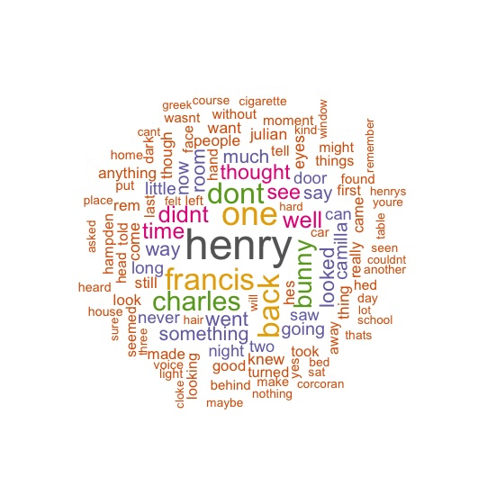
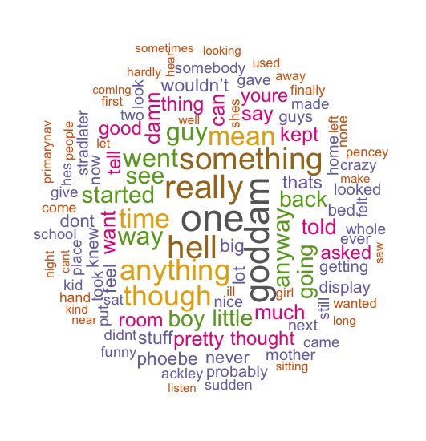

Working With Words
I have always enjoyed working with words as a medium, and last year I decided to put my skills to the test by trying to get a travel piece I had written published. Below, I discuss the outcome of that, as well as a couple of other tiny 'projects' and fun tasks I have undertaken recently. Enjoy!
Background
In June of 2024, myself and some friends went on a trip to Montenegro. I came away feeling stimulated, excited and energised and I knew that I had something to write about. I wrote this travel piece which was published in the 2024 Nov/Dec edition of Fairlady magazine.
I have another travel piece on Marseille set to come out in Fairlady soon! Keep your eyes peeled. For now, enjoy the piece on Monetenegro below.
Other Bits
Once a year, my flatmates and I host a quiz at our place with friends. I wanted to make a question in which players had to guess the novel based on the year of publication and a wordcloud showing the most frequently words in each book. Luckily, I have the means of doing this without paying for it on a website and I made these word clouds on R. You can find an example of how to produce the plots here. See if you can guess which books correspond to which word cloud.

What book is this from 1992?

And what is this book from 1952?
Book Recommendation Model
Something I struggle with as a reader is finding good recommendations of what to read next based on my taste. This is why I am interested in making a data focused, streamlined and effective book recommendation model based on a large data set of Amazon books and their reviews. I want to use an NLP-type model to provide the most accuarte book recommendations based on user history and the database of their reviews and ratings. Watch this space for progress!